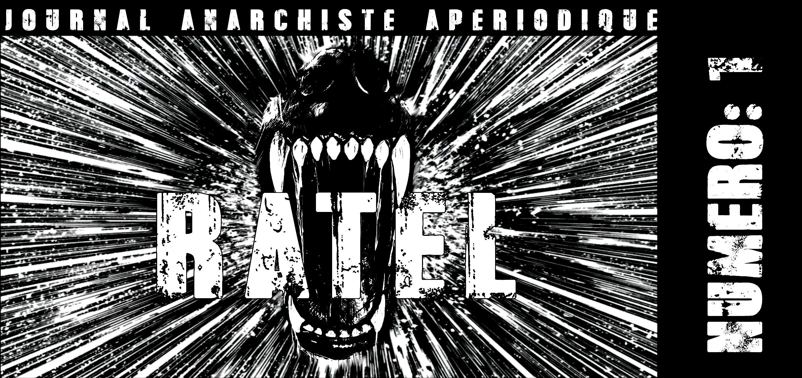

Ratel numéro 1

Edito
Si 2026 s’ouvrait avec les échos réjouissants de la révolte en Iran, sa répression brutale et la guerre qui s’en est suivie semble préfiguré notre futur plus ou moins proche, rejetant toujours plus loin la perspective révolutionnaire anti-autoritaire, ou peut-être que non; en effet les révolutionnaires d’hier comme d’aujourd’hui n’ont jamais prétendu connaître la date de la Révolution mais ont désiré surtout hâter sa venue par leurs interventions. Si la normalité nous était déjà insupportable l’extension et l’accumulation des guerres, la militarisation croissante qui les accompagne, ajoute au quotidien de cette société basé sur l’autorité et la servitude, l’enfer de la guerre. Dans son empreinte les discours nationalistes et militaristes font leur retour en grande pompe, dans le même temps les politiques migratoires des Etats se durcissent, le flicage de la CAF et de France Travail se fait à chaque nouvelle réforme plus contraignant et humiliant. Face à cela se recroqueviller sur l’identité, la religion, la nation semble être la solution proposée aussi bien par la droite que par la gauche, quoi de plus normal les replis identitaires sont les moyens les plus sur pour nous transformer en bons citoyens prêt à travailler, à voter et préparer de plus en plus à se faire tuer « pour le salut de la patrie ». Dans le triste paysage brosser jusqu’ici on pourrait s’attendre à ce que les aires à prétentions subversives restent des endroits d’où surgiraient des critiques, analyses et pratiques permettant de créer et d’approfondir les conflictualités avec cette société. Malheureusement une bonne partie de ces aires s’enfonce dans la passivité, la mondanité militante, érige la lâcheté en principe, et semble dans l’attente du prochain mouvement social permettant de composer avec la gauche, remisant ainsi l’attaque contre ce monde à des lendemain de plus en plus lointain. La guerre sociale ne s’arrêtera pas face à nos différentes abdications devant l’existant, alors propageons la révolte et renouons avec l’attaque sans médiation ni concession, reprenons à notre compte les mots de Lorenzaccio luttant contre la tyrannie, « Qu’importe que la conscience soit vivante, si le bras est mort ? » et joignons l’acte à la parole. Dans le contexte actuel sortir de l’apathie et de la résignation qui tend à se généraliser est une nécessité, reprendre des critiques et pratiques offensives est une piste que nous devons nous réapproprier, c’est dans ce but et pour renouer avec ce qui a fait une des force du mouvement révolutionnaire c’est à dire la production écrite permettant de contribuer aux luttes, que naît ce journal. Ratel est un journal apériodique qui se propose de diffuser des critiques, analyses et textes d’agitations. On y écriera à propos de révolte d’ici et d’ailleurs, on y diffusera des vieux textes qui sont encore pertinents de nos jours. Il n’a pas pour ambition de représenter qui que soit, ni de s’adresser à une cible particulière; et surtout ce journal ne fait pas de propagande tout simplement car il se place dans une perspective anarchiste et anti-autoritaire. Et parce que la révolte par de soi. Parce que l’anarchisme ne cherchent pas des gens qui suivent ou des « masses » à entrainer. Parce qu’être anarchiste c’est agir pour et par soi-même et se mettre en jeu avec toutes les conséquences que ça implique en affrontant l’Etat, le capital et toutes autorités. Parce que l’anarchisme n’est pas une idéologie, il ne peut donc être mis en boîte pour servir une propagande.
Et enfin pourquoi Ratel ? Et bien déjà parce que… et ensuite un nom c’est pratique et quitte à en choisir un prendre celui d’un animal qui envoie chier les humains et les lions (et en plus il bouffe du poulet), les deux figures d’autorités de son environnement, paraît tout indiquer.
Contre l’Etat contre la guerre : renouons avec un anti-militarisme et un internationalisme offensif
Ukraine, Soudan, Palestine, Iran, Afghanistan, Liban… les guerres se multiplient et s’intensifient et avec elles leur lot de morts et de destructions. En parallèle les discours nationalistes et guerriers deviennent de plus en plus récurrents dans la bouche des gouvernements. L’Allemagne a réintroduit le service militaire pour le moment il est volontaire, et depuis une loi votée fin 2025 une autorisation de l’armée est désormais nécessaire pour quitter le pays pendant plus de 3 mois pour les hommes de 17 à 45 ans, une étape de plus dans la préparation d’une conscription plus large. En réponse à ces nouvelles mesures le 5 mars dernier des milliers de jeunes ont manifesté contre l’encasernement auquel l’Etat les destine. En France après avoir enterré le SNU, le gouvernement l’a remplacé en novembre 2025 par le Service National ce nouveau dispositif pour le moment sur la base du volontariat s’adresse aux jeunes entre 18 et 25 ans sans condition de diplôme, il promet 10 mois d’encadrement militaire contre une rémunération de 800 euros par mois. En parallèle France Travail annonce la création d’une « Task force » pilotée par un général pour fournir une main d’oeuvre correspondant au besoin de l’industrie de l’armement, une opportunité de plus pour tous les flics sociaux avides de nationalisme et de travaillisme. Le message est clair : nous mettre tous au turbin ou nous envoyer nous faire tuer pour la « grandeur de la nation » ou pour la « défense de la démocratie » et gare à ceux qui refuseront de rentrer dans le rang. Les Etats, conformément à leurs logique tendent tous à vouloir nous enrégimenter pour participer à la grande faucheuse qu’est la guerre que ce soit en allant se faire tuer sur le front ou en produisant ce qui permettra de tuer des exploités d’ailleurs. Ces guerres déclenchées pour les intérêts des Etats qu’ils soient économiques, politiques ou idéologiques n’ont rien d’un hasard elles fonts partie du jeu politique auxquels nous soumettent tous les Etats, elles ne sont au final que « la continuation de la politique par d’autres moyens ». Dans le sillage des guerres et de leur préparatifs les discours nationalistes fleurissent dans les propos des politiques qu’ils soient de droite où ils peuvent vanter l’armée et vomir leur xenophobie en parlant de « risque migratoire » ou de gauche pour faire la promotion de la « conscription citoyenne » et d’une industrie de l’armement bleu blanc rouge (comme Mélenchon en pâmoison devant Dassault). De part et d’autre la nation est investie politiquement comme devant être défendue en premier. Elle est la chose autour de laquelle les administrés doivent se rassembler. Partout les individus sont priés de se nier pour se regrouper selon le plus petit dénominateur commun et l’idée nauséabonde qu’il faudrait défendre l’endroit de merde où l’on vit contre ceux qui vivent quelques kilomètres plus loin. Dans ce contexte certains pourraient être tenté d’enterrer la perspective révolutionnaire anti-autoritaire comme se fut le cas par le passé (comme en 1914) et de choisir un camp plutôt qu’un autre que ce soit pour la défense de la démocratie ou par anti-impérialisme. Cependant il est nécessaire de défendre et d’approfondir cette perspective révolutionnaire anti-autoritaire et de s’armer contre les diverses manipulation nationalistes, démocratiques et religieuse pour enfin détruire les Etats, leur nations, leur peuples fantasmés, les frontières et toutes autorités.
En effet de plus en plus d’exploités se retrouvent pris entre deux feux, d’un côté les bombes de l’autre la répression qui s’intensifie et s’accroît toujours plus dans un contexte de guerre qu’elle lui soit lié ou pas. Le cas de l’Iran est à ce titre explicite alors que les bombardements des Etats-Unis et d’Israël font rage (durant lesquels plus de 1700 civils ont été tués) la répression qui a déjà fait plus de dix milles morts en janvier contre le dernier mouvement de révolte se poursuit. Les arrestations et les condamnations à morts pour la participations aux manifestations ou en lien avec la guerre se font chaque jours plus nombreuses, depuis le début de la guerre 21 personnes ont déjà été exécutés pour motif politique auxquelles s’ajoutent les 1639 personnes exécutées durant l’année 2025. En Israël aussi la répression contre les refuzniks (ces jeunes israéliens qui refusent de rejoindre l’armée) se fait plus forte, les condamnation à de la prison se font plus fréquentes et plus lourdes dans le contexte de la guerre à Gaza, dans le même temps le parlement israélien a voté une loi qui permet aux tribunaux militaire de Cisjordanie de prononcer une peine de mort pour les Palestiniens arrêtés pour des faits de terrorismes.
En Russie où le régime de Poutine a muselé toutes oppositions politiques au fil des années, le conflit en Ukraine a permis d’étendre et de durcir la répression contre toutes actions ou paroles qui s’opposerait à la guerre, les condamnations à de lourdes peines de prisons pleuvent sur les anti-militaristes. L’Etat ukrainien n’est pas en reste outre la loi martiale promulgué en février 2022 qui prévoit jusqu’à 10 ans de prisons pour toutes absences de plus de trois jours non autorisées et 12 ans pour toutes actes de désertion, le parlement ukrainien examine actuellement une nouvelle loi à l’initiative de la première ministre visant à durcir la répression contre les déserteurs. Ceci n’est guère nouveau les Etats ce sont toujours servis des guerres pour réprimer ceux qui refusaient le destin qui leur était promis (comme c’est déjà le cas en période de paix) la rhétorique nationaliste permet de faire passer toutes actes de révoltes comme étant le fait de « traîtres à la patrie » ou étant en lien avec l’Etat ou l’organisation adverse. C’est pourquoi il est nécessaire de refuser les logiques campistes qui voudraient nous faire les soutiens d’un Etat sous prétexte que celui d’en face serait pire et d’affirmer que la défense d’un Etat, d’une nation n’a jamais été synonyme d’émancipation et encore moins de révolution et que si une guerre est à mener elle est sociale et elle doit se faire contre l’Etat, le Capital et tout ce qui nous rend esclaves.
A ce titre l’idéologie anti-impérialiste apparaît dans la séquence actuelle comme étant l’arnaque qui permet le plus efficacement de tomber dans cette logique campiste mortifère, des révolutionnaires auto-proclamés voudraient nous faire soutenir des organisations réactionnaires et des Etats sous prétexte qu’ils incarneraient la lutte contre l’impérialisme (mais seulement celui des Etats-Unis et d’Israël). Si l’anti-impérialisme a depuis Lénine toujours été une marotte de la gauche et de l’extrême-gauche il est dommageable de voir une partie des aires à prétention subversives céder aux sirènes de la gauche via une méthode éculée que l’on pouvait penser comme étant réservée à quelques vieux maoïstes ou chiraquiens (qui tous deux se disaient aussi contre l’impérialisme). Dans leur obsession idéologique une partie des anti-impérialistes se vautrent allègrement dans l’antisémitisme ripoliner en antisionisme dans la plus pur tradition de la sionologie de l’URSS (doctrine réutilisant les poncifs de la propagande antisémite dans le but affiché de critiquer l’Etat israélien et le sionisme) qui a été depuis reprise par l’extrême droite soralienne. Les mêmes semblent incapables de critiquer Israël sans verser dans un sensationnalisme gerbant visant à nazifier les Juifs et Israël reprenant là encore l’antisémitisme soviétique post Seconde Guerre Mondiale. A l’image de la Ligue Anti-impérialiste récemment créée qui proclame à l’occasion du vote en Israël de la loi instaurant la peine de mort pour les Palestiniens que c’est là « une expression explicite de son visage nazi sanguinaire », au lieu de simplement y voir la brutale normalité de l’Etat dans un contexte colonial. L’idéologie anti-impérialiste a aussi pour effet d’amalgamer l’Etat avec les individus qu’il domine et opprime permettant à nos pseudo-révolutionnaires d’ici d’absoudre les massacres commis au nom de la lutte contre l’impérialisme et de fantasmer sur une violence dont ils ne sont pas capables bien à l’abri dans leur canapé situé à des milliers de kilomètres des bombes. Cette logique permet aussi de nier l’agentivité des individus à se révolter puisque ce la serait faire le jeu de la partie adverse de critiquer ce qu’on a décrété comme étant le « camp anti-impérialiste ». Reprenant ainsi les discours des Etats comme on a pu le voire en Israël où la droite n’hésite pas à qualifier toutes personnes contestant ses actions à Gaza de « traîtres » ou bien la République Islamique d’Iran parlant de « complot américain » à propos du dernier mouvement de révolte ayant secoué le pays. Dans leur carcan idéologique la solidarité ne s’adresse plus aux révoltés mais aux Etats (ou proto-Etats) qui les répriment, cette invariance permet de recycler un prêt-à-penser à la fois confortable et sans aucune conflictualité avec l’existant. Faut il rappeler que l’anti-impérialisme constitue une arnaque qui vise à défendre les « nations opprimées » contre les nations impérialistes ou bien à transformer les mouvements de révoltes et d’insurrections en guerre ou guérilla politique et militaire au profit de factions qui se disputent le pouvoir à l’intérieur des dites nations s’inscrivant ainsi toujours dans le cadre de l’Etat. Il est temps d’en finir une bonne fois pour toute avec cette idéologie qui enterre toutes perspectives de révolution, elle n’a en effet toujours eu qu’un seul et unique but celui de « Négocier un Etat, une place pour diriger, c’est l’ultime revendication de ces armées populaires sans terres » ( tiré du texte « Fedayin vous nous faîtes chier » revue La Lanterne Noire n°1, 1974). Il apparaît primordial d’en finir avec cette époque qui ne cesse de recycler le pire de son héritage pour enfin renouer avec la perspective révolutionnaire anti-autoritaire.
Ceci ne doit pas être qu’une formule incantatoire. Dans un contexte de guerre la nécessité de retrouver un anti-militarisme et un internationalisme offensif devant s’ancrer dans des pratiques en lien avec la réalité (soutenir les réseaux de déserteur, les prisonniers anti-guerre, participer aux campagnes de soutien, actions de sabotages…). Remiser la conflictualité avec l’existant du fait de la guerre ne peut que nous pousser à des alliances avec les va-t-en guerres de tout bord comme ce fut le cas lors de la Première Guerre Mondiale avec le lamentable Manifeste des Seize signé par des figures de l’anarchisme de l’époque comme Pierre Kropotkine et Jean Grave. Ou à contrario se contenter d’un pacifisme béat qui verrait dans la paix et donc dans le retour à la normale un pis-aller qui ne fait que reconduire l’existant. L’histoire du mouvement révolutionnaire qui s’il n’est pas exempt de compromission comme récemment cité est aussi riche d’exemples d’actes individuels et collectifs allant du refus de la guerre et de l’insoumission en passant par le sabotage jusqu’à la désertion et la mutinerie. Les discours et les interventions anti-militaristes des militants de l’URW (Union of Russian Workers) ou de la Ligue Anti-militariste créée à l’initiative de Emma Goldman et Alexandre Berkman aux Etats-Unis au début du XXème siècle sont toujours pertinents et d’autant plus aujourd’hui à l’heure où les discours nationalistes et militaristes font leur retour sur le devant de la scène. Les exemples d’anarchistes et d’anti-autoritaires s’opposant au chantage à l’union nationale et refusant de reléguer le moment de la Révolution à une hypothétique paix sont nombreux. A ce titre la réponse de Errico Malatesta aux anarchistes qui ont signé le Manifeste des Seize est sans doute le plus emblématique. Ces interventions contre la guerre et toujours avec l’objectif de maintenir et d’approfondir les conflictualités qui surgissent dans son sillage, sont autant de pistes à se réapproprier. Aujourd’hui encore la perspective de révolution contre l’Etat, le capital et toutes autorités ne sont pas mortes même en période de conflit on peut aisément le constater avec le déclenchement de la guerre en Ukraine qui reçu en réponse une vague d’attaque des bureaux de recrutements de l’armée russe et de sabotages de ligne de chemin de fer (revendiqués pour partie par Boyevaya organizatsiya anarkho-kommunistov ou BOAK). Pour que cette perspective reste vivante soyons solidaires avec les révoltés de partout et non avec leurs Etats, refusons les logique campistes, les idéologies nationalistes (qu’elles soient démocrates ou pas) et l’anti-impérialisme qui ne sont que les deux faces de la même pièce. Posons nous les questions qui nous permettrons d’identifier et d’abattre ce qui fait obstacle à un anti-militarisme et à un internationalisme offensif pour enfin renouer avec les pratiques et les perspectives que l’on pourrait résumer selon les mots de Luigi Galleani « Contre la guerre, contre la paix, pour la Révolution sociale ». Plutôt que céder au chantage de la gauche et ses appels au barrage, front commun et autres pièges démocrates face à « l’urgence de la menace fasciste » rappelons nous une chose, si urgence il y a elle est d’opposer à la guerre entre Etats, religion ou ethnie la guerre sociale contre l’existant pour un monde sans Etats, ni patries, ni frontières, ni prisons, ni nations. Vive l’anarchie ! Vive la Révolution !
Contre l’Etat, les frontières, les CRA, les flics et les gestionnaires de la misère : déchaînons nos passions destructrices !
D’année en année le nombre de morts en Méditerranée continue d’augmenter. Depuis le début de l’année 2026 au moins 1003 personnes ont perdu la vie en tentant de la traversée, que ce soit pour fuir la misère, la répression, la guerre ou simplement en quête de meilleures conditions de vie. Cette année, dans la Manche, 6 personnes sont déjà décédées en tentant de rejoindre le RoyaumeUni (s’ajoutant au 29 personnes mortes en 2025), en plus des flics et du danger de la traversée s’ajoute le harcèlement de groupe de fachos. Le 11 février dernier à Nantes l’Etat a mobilisé 80 de ses flics pour une vaste opération de contrôle d’identité visant à arrêter le plus de sans-papiers qu’ils pouvaient. A l’issue de ces contrôles, 12 personnes ont été placées en rétention administrative dont deux ont été transférées au CRA d’Olivet près d’Orléans. Le 12 mars à Paris le même type d’opération a mené à l’arrestation de 13 personnes pour défaut de papiers. Le but de ces interventions en plus du fichage, placement en CRA et des expulsions qui en découle vise aussi à pousser les sans-papiers à se clandestiniser et à accepter n’importe quel travail sous payés. Expulser, contrôler, retenir, exploiter et apprendre la peur à tous. Les frontières et les fictions qui lui sont liés, identités, peuples, nations sont autant d’outils visant à nier toutes individualités en les enserrants dans des carcans identitaires, permettant ainsi aux puissants de disposer d’un bétail patriotique bien docile plus prompt à défendre son identité chimérique qu’à attaquer ses chefs. Elles ont aussi pour effet de faire exister l’arnaque d’un « bien commun » pour lequel il faudrait se sacrifier que ce soit au travail ou sur un champ de bataille, tout en justifiant au passage la traque, le tri et l’enfermement de tous ceux qui seront vu comme indésirables car le mettant en péril.
Depuis le 26 mars 2026, l’Union Européenne a voté un nouveau texte qui facilite les procédures d’expulsions, allonge la durée maximale de détention administrative passant de 18 à 24 mois et avalise les « hubs de retour » ou « pays tiers sûrs ». Ce dispositif permettra d’expulser des sans-papiers vers des pays déclarés comme « sûrs » sans avoir à attendre l’autorisation des Etats dont ils sont les ressortissants et il va aussi de fait créer des « zones d’attente » (de nouveaux camps de rétention) le temps de traiter les demandes de papiers (demande d’asile, titre de séjour etc…), l’UE poursuit ainsi l’externalisation de sa politique migratoire, repoussant les problèmes qui découlent de cette politique le plus loin possible de ses frontières. Profitant de la résignation, de l’apathie générale et de la multiplication des discours xénophobes voire racistes, l’Etat durcit et étend son arsenal répressif visant les sans-papiers, les pauvres, les marginaux de toute sorte : en bref tous ceux qu’il considère comme indésirables. Tout cela n’a rien avoir avec une quelconque « fascisation » de l’Etat ou un « racisme d’Etat » comme aiment à le rappeler les différentes crèmeries gauchistes désirant faire leurs beurre sur la lutte contre les frontières. Mais a en revanche tout avoir avec l’existence des frontières, des CRA, des papiers, des taules, de l’exploitation et donc avec l’existence de l’Etat qu’il soit démocratique ou pas. Cette rhétorique vise à mobiliser une indignation citoyenne dans le but de réformer et donc d’améliorer les politiques migratoire au moyen de centres d’enfermement plus humains, d’un tri entre « bons » et « mauvais » sans-papiers plus efficace. Disons le franchement nous ne cherchons pas à rendre la machine à expulser plus humaine, nous voulons la détruire et il en va de même pour l’Etat, les frontières, les nations et leur peuples fantasmés, les taules, le travail et toutes autorités. Dans la lutte contre la machine à expulser les tentatives de pacification, de divisions et de récupération ne manquent pas. L’Etat dispose de tout un tas d’outils et de relais pour que cette lutte ne déborde pas et ne prenne pas un tournant plus radical. Il peut ainsi jouer l’une de ses cartes les plus tordues, celle de l’asile politique permettant de faire son tri social entre « gentils » réfugiés d’un côté et « méchants » sans-papiers de l’autre, l’accueil des premiers cités permettant de justifier la chasse des seconds. Mais il dispose aussi de ses fidèles relais que sont la gauche, les humanitaires et autres gestionnaires de la misère qui eux voudraient nous cantonner aux rôles de « soutiens » ou « d’alliés » pour mieux enterrer toutes velléités de lutte offensive qu’ils ne pourraient contrôlé et encore moins tiré profit. D’ailleurs ces associations humanitaires comme la Cimade ou France Terre d’Asile font partie des rouages de cette même machine. Ils agissent au côté de l’Etat pour co-gérer les CRA; au même titre que les entreprises qui en assurent la logistique comme Sodexo, Onet et GEPSA; ou de celles qui les construisent comme EGIS, Eiffage et Bouygues; et des institutions qui permettent aux flics d’organiser les rafles comme la CAF et France Travail; celles qui balancent les sans-papiers dès qu’elles ont fini de les exploiter comme Manpower, Proman et Alixio; et enfin les agences de voyages et compagnies aériennes sans qui les expulsions seraient impossible comme Amex Travel et Chalair Aviation.
Ces entreprises, associations et institutions ne limitent pas leur actions à la question des frontières on les retrouve aussi quotidiennement pour gérer la mise au travail, les prisons et tout ce qui fait fonctionner cette société de merde. Sans nier les spécificités inhérentes au fait d’avoir des papiers ou non et les conséquences qui en découlent, au final, chacun dans ce bas monde partagent une condition commune. Nous sommes tous des proies pour les frontières, les flics, les matons, les patrons, l’Etat et ses supplétifs humanistes. Il faut combattre ces séparations, en abattant ce qui les maintient ! Tous ceux qui participent à cette normalité qui enferme, matraque, expulse et humilie ont des noms et des adresses c’est autant de lieu et d’occasion pour exprimer notre haine sans médiation ni concession. Refusons de reproduire les divisions que le pouvoir et ses alliées veut instaurer sans nier les particularités liées à nos différents statuts administratifs, avec ou sans-papiers ce sont les mêmes flics qui nous contrôlent, ce sont les mêmes conseillers France Travail qui menacent de nous radier, les mêmes agents de la CAF qui nous coupent le RSA et les même boîtes d’intérim qui nous font trimer. Ne sombrons pas dans la passivité et la résignation car pour toutes personnes désirant détruire l’Etat, attaquer la machine à expulser est une évidence, car la liberté ne surgira pas magiquement, car l’Etat et le capital ne tomberons pas d’eux mêmes, car la solidarité avec les révoltés de partout c’est l’attaque contre ce monde fait de frontières, de taules et de domination, car « il n’y a pas d’ailleurs où guérir d’ici » et que l’unique façon de se sentir exister dans ce quotidien fait d’autorité et d’ennui c’est d’être à couteau tiré avec l’existant. Contre l’Etat, les frontières, les CRA, les flics et les gestionnaires de la misère déchaînons nos passions destructrices !
Le bétail électoral
Ici même, j’ai croqué à grands traits le bétail syndical, le bétail patriotique, le bétail des jaunes, le bétail des honnêtes, il faut aujourd’hui que je dépeigne le plus important des bétails, le plus fort par la bêtise, le bétail électoral. Sur la peau d’âne du tambour nationaliste, sur la baudruche des tambourins républicains, aux cordes de la guitare sentimentalement humanitaire, aux cuivres de la trompette révolutionnaire, voilà que se bat, que se touche, que se donne le rappel du bétail ; c’est le ranz des électeurs qui retentit partout à travers l’espace. Votez pour Tartempion, votez pour Machin, votez pour Truc. Des affiches multicolores vous rapprochent à tous les coins de rue afin de vous raconter la candeur, l’esprit, la loyauté d’un quelconque candidat. En peu de lignes, un Gérault-Richard des boulevards extérieurs, un Rouvier de grands chemins, un Marchand du surin et de la pince (Allusion au général Jean-Baptiste Marchand) deviennent des parangons de vertu, d’honnêteté et de douceur. Le bétail électoral commente la force de la houlette d’Untel, le coup de fouet de Tel autre, le doigté crapuleux de Chose et le coup de gueule tonitruant de Machin. Le bétail pèse aussi la valeur des promesses faites ; non pas qu’il ignore que jamais elles ne sont tenues, mais pour se donner un peu d’illusion. La lune, le bonheur, la diminution des impôts, la liberté, autant de chimères auxquelles il ne croit plus mais auxquelles pourtant il lui paraît bon de sembler croire encore. Il court aux rendez-vous que lui donnent les apprentis bergers après avoir fait un choix au zanzibar du troquet. Chez les nationalos ou chez les socialos ? Les dés répondent. Il garnit la salle et il écoute religieusement l’orateur-candidat qui découpe des tranches de bonheur et débite des petits paquets de réformes. Il ouvre la gueule et les oreilles pour en prendre davantage. « Les alouettes tomberont toutes rôties dans ta bouche ; ton taudis deviendra un palais ; tu auras des rentes à trente ans, dit le candidat. —Ah ! Ah ! Ah ! qu’il parle donc bien, cet homme ! Ce sont des mensonges qu’il nous raconte, mais que cela nous fait du bien de croire un moment que ce sont des vérités », dit le votard. Quelquefois, il arrive qu’un autre candidat interrompe pour dire : « Ce n’est pas exact, les alouettes tomberont toutes bouillies dans ta bouche. » Et le bétail électoral suit, attentif, le débat passionnant : « Bouillies ou rôties ? Comment seront préparées ces alouettes qu’il ne mangera pas ? » Alors que tous sont dans le rêve, une voix interrompt brutalement, sans précautions oratoires, les bonimenteurs : « Les alouettes ne tomberont ni rôties ni bouillies dans ta bouche, nigaud. Et si elles tombaient jamais toutes prêtes, ce serait de par ta bêtise, dans la gueule des candidats. » Alors, ce sont des cris, des vociférations : « À mort ! qu’on le tue ! qu’on le chasse ! La ferme ! Mouchard ! Agent de la réaction ! Jaune ! Rouge ! Jésuite ! Communard ! » Celui qui veut jeter la vérité est entouré, bousculé ; les poings se lèvent sur sa tête, on lui crache au visage, on le jette dehors. Et tranquille, le prometteur détaille le bonheur, offre le paradis et le bétail électoral reprend le fil du rêve qu’il fait tout éveillé, boit à nouveau le vin décevant de l’espérance.
Comme dans tous les troupeaux, il y a les meneurs, les gens du comité. Ce sont ceux à qui le candidat a promis autre chose que la viande creuse de l’espoir. Ils ont mission de « chauffer » la salle, de veiller à ce qu’aucun gêneur ne puisse entrer. Ils préparent le public, ils soûlent de vinasse quelques forts-à-bras qui feront de leur poitrine un rempart au bonimenteur. À coté d’eux, il y a quelques sincères : ceux dont la bêtise atteint le dernier degré. Ils font l’appoint le meilleur, ce sont les moutons qui sautent par-dessus bord, montrant la voie à tout le troupeau. Disons-le bien haut : que le bétail électoral soit tondu, mangé, accommodé à toutes les sauces, qu’est-ce que cela peut bien nous faire ? Rien. Ce qui nous importe, c’est qu’entraînés par le poids du nombre nous roulons vers le précipice où nous mène l’inconscience du troupeau. Nous voyons le précipice, nous crions « Casse-cou ! » Si nous pouvions nous dégager de la masse qui nous entraîne, nous la laisserions rouler à l’abîme ; pour ma part même, le dirai-je ? Je crois bien que je l’y pousserais. Mais nous ne le pouvons pas. Aussi devons-nous être partout à montrer le danger, à dévoiler le bonimenteur. Ramenons sur le terrain de la réalité le bétail électoral qui s’égare dans les sables mouvants du rêve. Nous ne voulons pas voter, mais ceux qui votent choisissent un maître, lequel sera, que nous le voulions ou non, notre maître. Aussi devons-nous empêcher quiconque d’accomplir le geste essentiellement autoritaire du vote. Chez les nationalistes et les socialistes, chez les républicains et les royalistes, partout nous devons porter la parole anarchiste « Ni dieux ni maîtres ». Et par la raison, et par la violence, il nous faut empêcher la course à l’abîme où nous entraînent la veulerie et la bêtise des votards. Que le bétail électoral soit mené à coups de lanières, cela nous importe peu, mais il construit des barrières dans lesquelles il se parque et veut nous parquer ; il nomme des maîtres qui le dirigeront et veulent nous diriger. Ces barrières sont les lois. Ces maîtres sont les législateurs. Il nous faut travailler à détruire les unes et les autres, dû-t-on, pour cela, disperser au loin le fumier où poussent les députés, le fumier électoral.
Albert Libertad
Le temps perdu
Devant la porte de l’usine Le travailleur soudain s’arrête Le beau temps l’a tiré par la veste Et comme il se retourne Et regarde le soleil Tout rouge tout rond Souriant dans son ciel de plomb Il cligne de l’œil Familièrement Dis donc camarade Soleil Tu ne trouves pas Que c’est plutôt con Que donner une journée pareille A un patron ?
Jacques Prévert